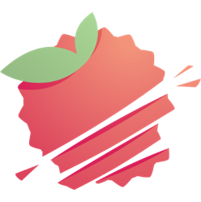

Y Detailed Figures
Figurines plus vraies que nature
Y Detailed Figures est un projet consistant à réaliser diverses figurines en 3D à partir de différents softwares. Permettant ensuite d'imprimer la figurine en 3D grâce aux imprimantes présentent au campus. Pour finalement etre revendu et racheté par les étudiants du campus. campus.
L'étudiant devra réaliser un concept 2D, à partir du niveau de difficulté qui lui aura était imposé selon son niveau d'étude.


Réalisation de la modélisation 3D de la figurine à partir de divers softwares.
Importation d'un fichier STL sur un logiciel d'impression 3D et réalisation du support pour la figurine.

Impression 3D de la figurine, un nettoyage ainsi qu'un limage de la figurine seront demandés.
Photoshop est utilisé dans la conception des characteres design
Maya est utilisé pour la modélisation des équipements et le hard surface des figurines
Zbrush est utilisé pour l’anatomie et les vêtemnts de la figurine
Lychee Slicer 3 permet de convertir des modèles 3D en instructions de mouvement précises pour l'impression 3D.
- Une adaptation du maillage devra être mis en place pour l’impression 3D afin que le fichier stl ne soit pas trop volumineux
- Une évidation de la figurine est éventuellement possible afin de diminué la quantité de résine utilisée
- Il faudrat prévoir un système d’emboîtage sur la figurine afin de réduire le temps d’impression et possiblement augmenter la taille de la figurine
- un socle basique
- posing léger
- style de la figurine: cartoon
- un socle avec un environnement léger
- posing qui sera mis en avant pour la figurine
- style de la figurine: semis-réaliste
- un socle avec un environnement complexe
- posing qui sera mis en avant pour la figurine
- un léger mécanisme sera à réaliser style de la figurine: cartoon, semis-réaliste, réaliste
Figurine Simple :
Figurine Classique :
Figurine complexe :
Les figurines pourront être imprimmer selon 3 tailles disponibles
Le temps d’impression dépend de la taille de la figurine

maximum 16H
maximum 32H
maximum 40H